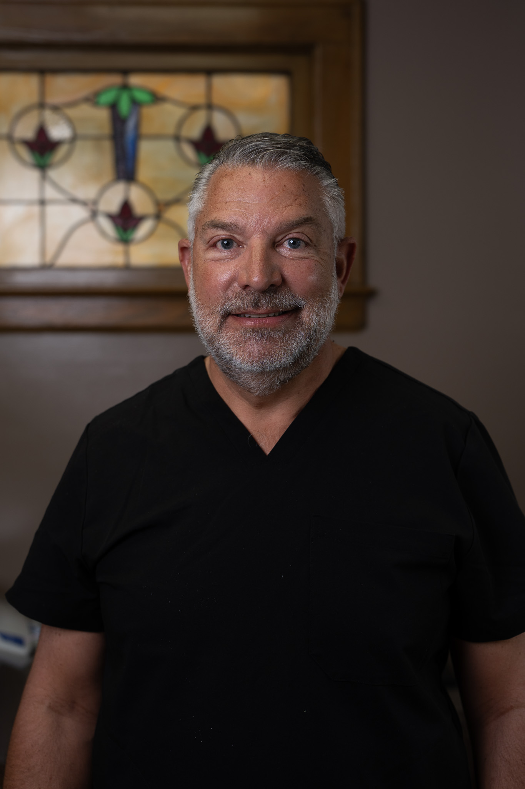

Dr. Bryan D. Pieroni, D.D.S.
A native Staten Islander, trained at Creighton, and rooted in this neighborhood since the day he came home to practice.
Dr. Bryan Pieroni is a native Staten Islander who received a B.S. degree from Creighton University in Omaha, Nebraska. Upon receiving his bachelor's degree in 1988, he continued at Creighton to receive his D.D.S. degree in 1992. After graduation, Dr. Pieroni returned to Staten Island for a one-year general residency at Staten Island University Hospital. In 1993 he became Chief Resident at the hospital and continued on the attending staff until 1996.
In 1993, Dr. Pieroni began working as an associate for Dr. Joshua Kanner, and in 1996 they formed their partnership. Throughout the years he has continued advancing with new dental technology and received specialized training in prosthetics, implantology, Invisalign, and laser dentistry.
Dr. Pieroni is certified in CPR, Advanced Cardiac Life Support, and infection control. He maintains memberships in the American Dental Association, the Academy of Osseointegration, the 2nd District Dental Society, and the New York Dental Forum. He is also a co-founder of the Greater Staten Island Study Club.